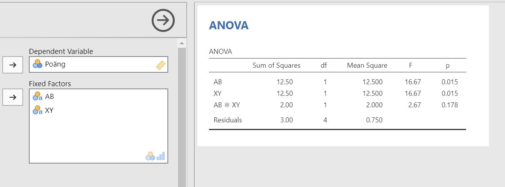

Chapter 7 Factorial ANOVA
How to perform a factorial ANOVA in jamovi:
Check that your data contains two grouping variables and a continuous outcome variable. Your data should look something like this:

Select
Analyses -> ANOVA -> ANOVA.

Move your outcome variable to Dependent Variable and your grouping variables to Fixed Factors.

The result is shown in the right pane:
